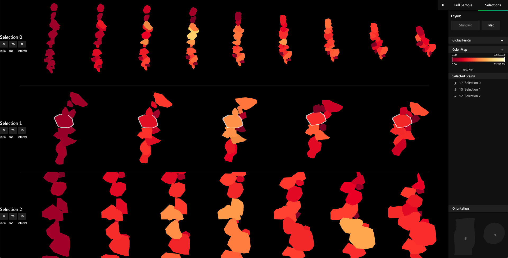
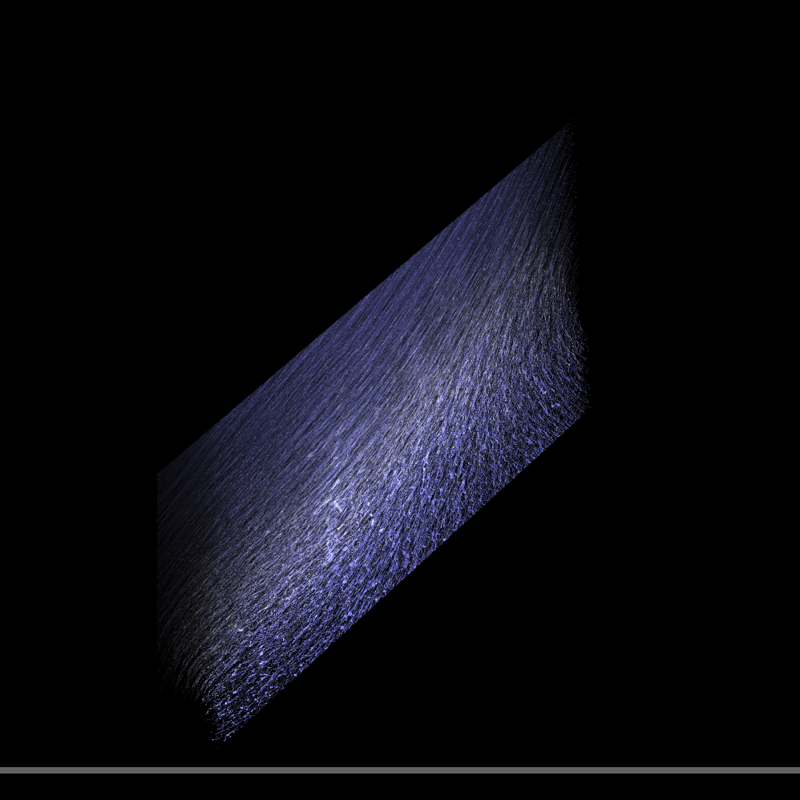

An interactive visualization tool for analyzing the underlying physics within granular materials. Grvin visualizes data from ~50,000 individual grains over ~70 timesteps as a column of granular material (sand) deforms under load. Made in collaboration with Caltech, Art Center, NASA JPL, and designers Pooja Nair, Adrian Galvin.
Problem addressed:
The granular geomechanics team at Caltech were working to understand patterns of failure in granular materials. They hoped to understand why granular materials behave as they do, specifically, supporting force nonuniformly and breaking down in a characteristic 'shear band.' Further understanding the physics in these granular samples would allow better materials to be created for applications like civil engineering. The team had a lot of data but their ability to visualize and explore it was severely limited. Their visualizations lacked interactivity, since rendering many grain surfaces can get computationally costly, and also suffered occlusion problems, where grains visibly obstruct each other and any important patterns.
Design approach:
When designing our visualization tool we regularly met with the granular geomechanics team to discuss their needs for analysis. From this we tried to understand what information is most important to them and how to display it most usefully. We identified two areas of interest: force chains and movement in the shear band. Force chains meaning adjacent grain sets supporting high load and the shear band meaning an area where deformation is concentrated. We iterated visualizations to clarify these phenomena and continued to meet with the team for feedback on prototypes and to understand their needs.
Final product:
Our final design visualizes a flow field of grain movement, a vector field of forces between grains, and provides interactions to crop and select subsets of data. Displaying both visualizations side by side allows for easy reference between and pattern identification. Data can be explored by slicing subsets of these large scale plots or by selecting sets of individual grain surfaces.
Once interesting patterns are identified and grain surfaces are selected, users can view animations of the grain surfaces, plot time series of the grains, and color map with additional data fields.
All selection and slicing use 2d drawing interactions to maximize clarity and ease of use. Users draw the area they want directly on top of the visualization and then project into 3d space to select or crop.
